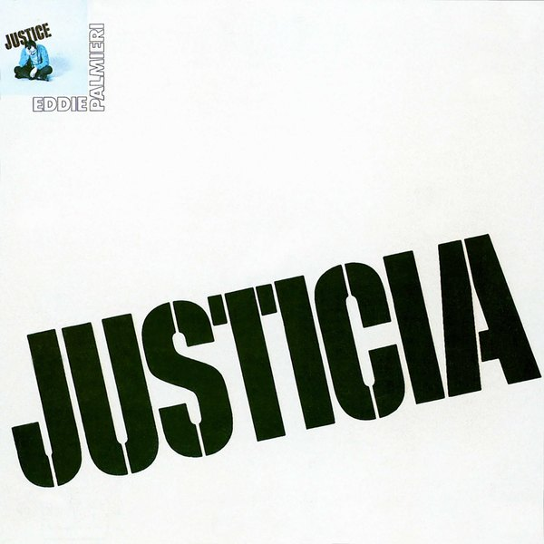
CRVI002566Eddie Palmieri - Justicia
1968
1968
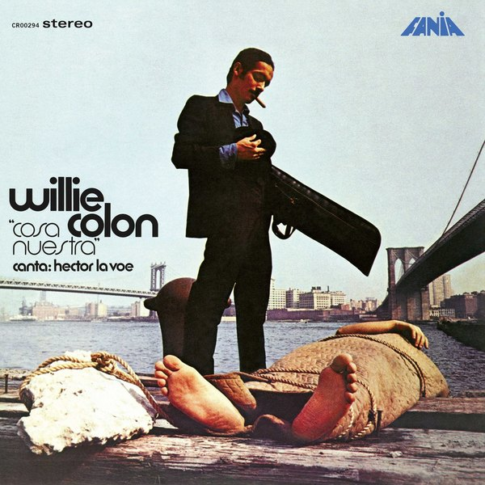
CRVI002571Willie Colón - Cosa Nuestra
1969
1969

CRVI000121Tadanori Yokoo - Word & Image
The Museum of Modern Art, New York, January 24 – March 10 · 1968
The Museum of Modern Art, New York, January 24 – March 10 · 1968

CRVI000116Tadanori Yokoo - Made in Japan, Tadanori Yokoo, Having Reached a Climax at the Age of 29, I Was Dead
Self-portrait poster · 1965
Self-portrait poster · 1965

CRVI000690Heavy J - Battle Royale
Hand-painted Ghanaian film poster
Hand-painted Ghanaian film poster

CRVI000563Kadir Nelson - High Style
The New Yorker, February 14 and 21, 2022 · 2022
The New Yorker, February 14 and 21, 2022 · 2022
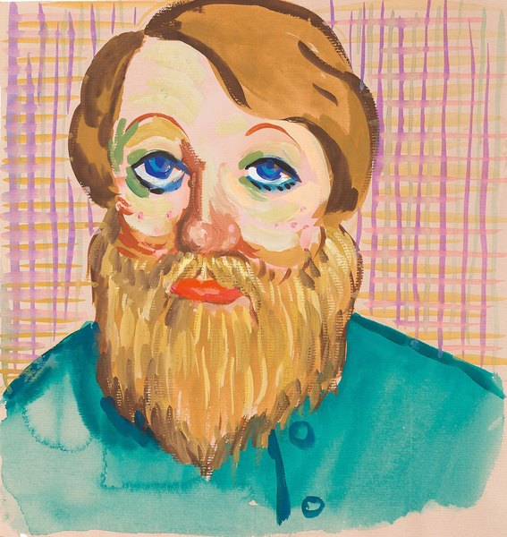
CRVI002050John Currin - Untitled
1992
1992
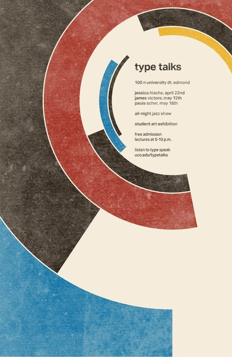
CRVI002517Unattributed - type talks

CRVI000692Stoger - Air Bud
Hand-painted Ghanaian film poster
Hand-painted Ghanaian film poster
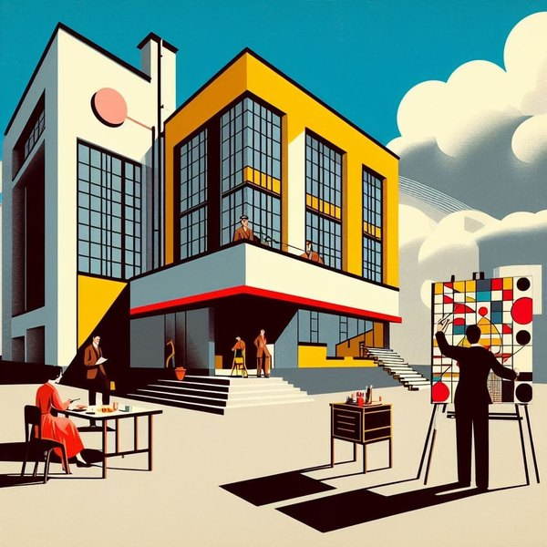
CRVI001753Unidentified - The Bauhaus building, Dessau

CRVI001331Barney Bubbles - Don't Join!
Designed by Barney Bubbles
Designed by Barney Bubbles
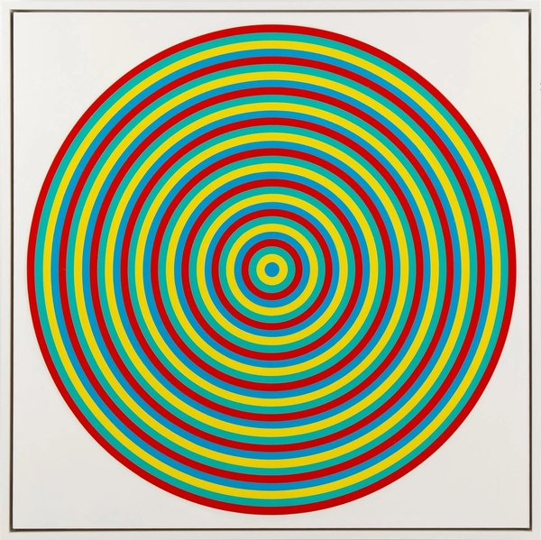
CRVI001848Unidentified - Concentric circle composition
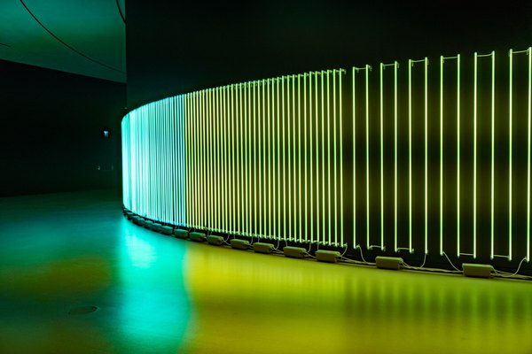
CRVI001942Unidentified - Neon Rhythm
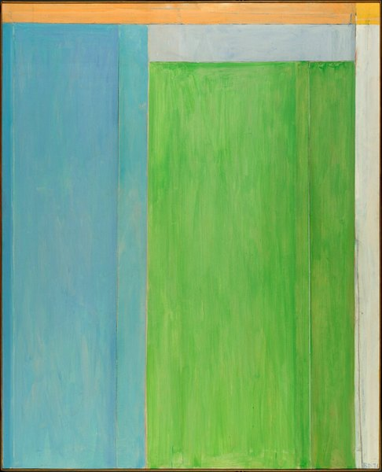
CRVI002117Richard Diebenkorn - Ocean Park #45
1971
1971

CRVI001179Wayne Shorter - Schizophrenia
Photograph by John Zoiner · Blue Note BST 84297 · 1969
Photograph by John Zoiner · Blue Note BST 84297 · 1969

CRVI000496Chris Nosenzo - Is Google Hurting Small Business?
Bloomberg Businessweek, August 10, 2020 · 2020
Bloomberg Businessweek, August 10, 2020 · 2020
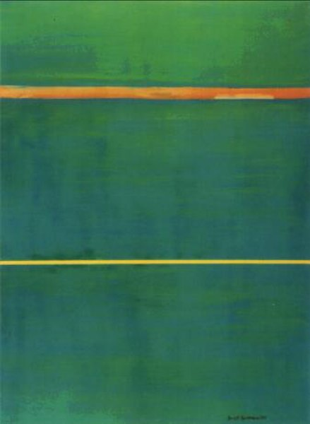
CRVI001790Barnett Newman - Dionysius
1949
1949

CRVI000833James McMullan - Head Out to Oz
Push Pin Graphic #52 · 71 × 46 cm · 1967
Push Pin Graphic #52 · 71 × 46 cm · 1967

CRVI000557Somnath Bhatt - The Baristas' Rebellion
Bloomberg Businessweek, May 16, 2022 · 2022
Bloomberg Businessweek, May 16, 2022 · 2022

CRVI000597Unknown - Why Everybody's Talking About Gossip
New York, May 3, 1976 · 1976
New York, May 3, 1976 · 1976

CRVI000729Robert Beatty - Floodgate Companion
Spread · self-published
Spread · self-published

CRVI001315Miles Davis - Bags Groove
Designed by Reid Miles · Prestige 7109 · 1957
Designed by Reid Miles · Prestige 7109 · 1957

CRVI000806Mark Tansey - The Myth of Depth
Detail · oil on canvas, 99 × 226.1 cm · 1984
Detail · oil on canvas, 99 × 226.1 cm · 1984

CRVI000859Julian Stanczak - Conferring Blue
Screenprint · 68.6 × 68.6 cm · 1981
Screenprint · 68.6 × 68.6 cm · 1981

CRVI000008Boards Of Canada - Music Has The Right To Children
Designed by Boards Of Canada · Warp Records · 1998
Designed by Boards Of Canada · Warp Records · 1998
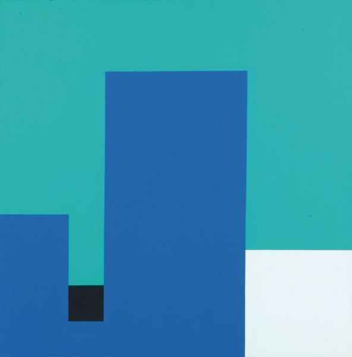
CRVI002492Bruno Munari - Negativo positivo.
1985
1985

CRVI000302Pekka Airaksinen - Other Power
Designer unknown · Hormonia · 2012
Designer unknown · Hormonia · 2012
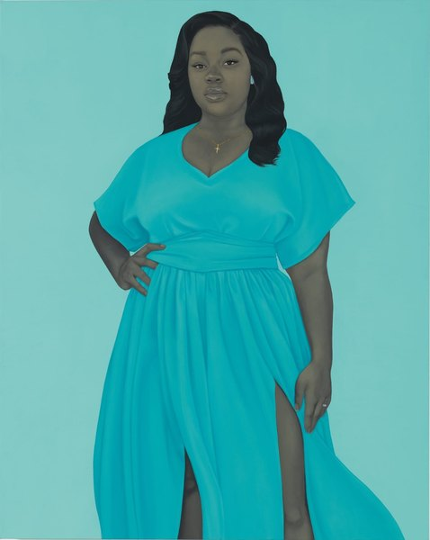
CRVI001980Amy Sherald - Breonna Taylor
2020
2020

CRVI000807Mark Tansey - Study for Action Painting II
Study · oil on canvas · 1985
Study · oil on canvas · 1985

CRVI000539Peter Herbert - Fortune 500
Fortune, June/July 2021 · 2021
Fortune, June/July 2021 · 2021
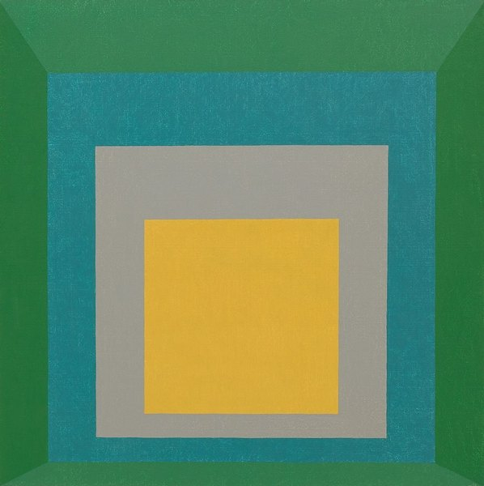
CRVI001759Josef Albers - Homage to the Square: Apparition
1959
1959

CRVI000742George Greaves - Untitled
Illustration
Illustration

CRVI001277George Wallington And His Band - George Wallington Showcase
Designed by John Hermansader, photograph by Francis Wolff · Blue Note 5045 · 1954
Designed by John Hermansader, photograph by Francis Wolff · Blue Note 5045 · 1954
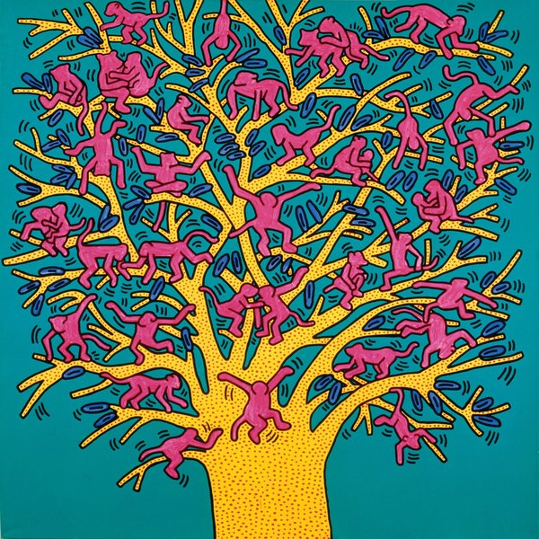
CRVI002154Keith Haring - Untitled (Tree of figures)

CRVI000824Seymour Chwast - Master & Dog
Push Pin Graphic #57 · 1972
Push Pin Graphic #57 · 1972
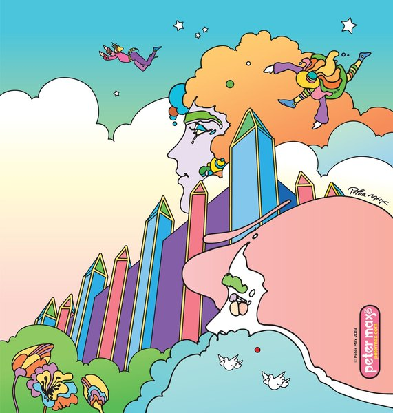
CRVI002407Peter Max - Cosmic landscape with crystal peaks
2019
2019

CRVI000828Seymour Chwast - Penny Pitch
68.6 × 53.3 cm · 1967
68.6 × 53.3 cm · 1967

CRVI001049Takenobu Igarashi - EXPO '85 — The International Exposition, Tsukuba, Japan
Poster · The Museum of Modern Art, New York · 1985
Poster · The Museum of Modern Art, New York · 1985
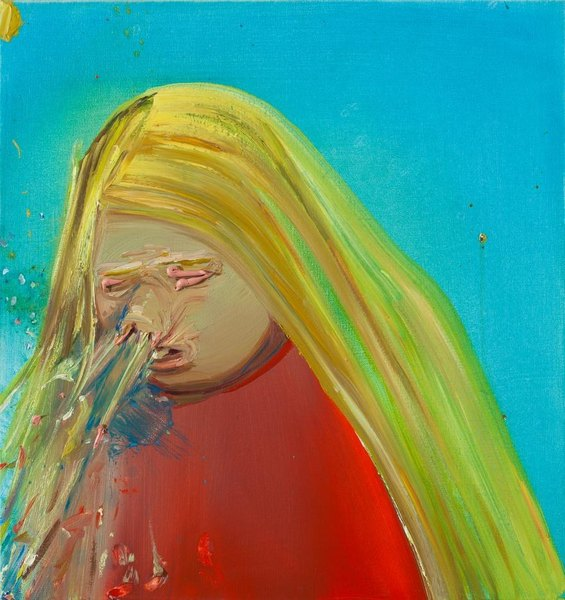
CRVI002030Dana Schutz - Sneeze
2001
2001
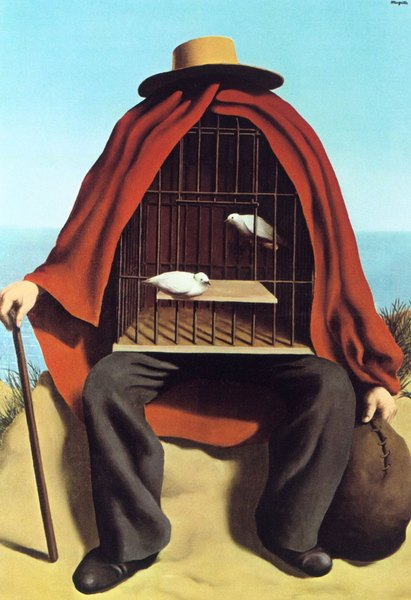
CRVI002351René Magritte - The Therapist (Le thérapeute)
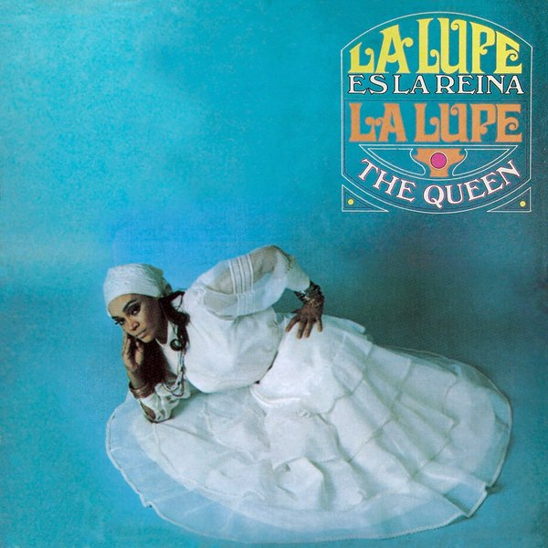
CRVI002595La Lupe - La Lupe Es La Reina / The Queen
1969
1969
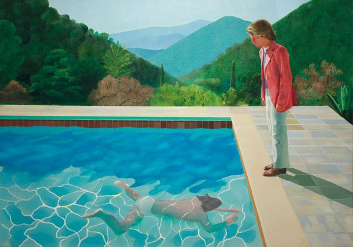
CRVI002264David Hockney - Portrait of an Artist (Pool with Two Figures)
1972
1972
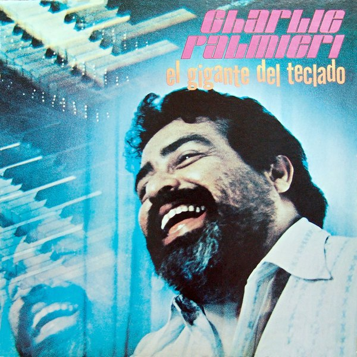
CRVI002559Charlie Palmieri - El Gigante del Teclado
1973
1973
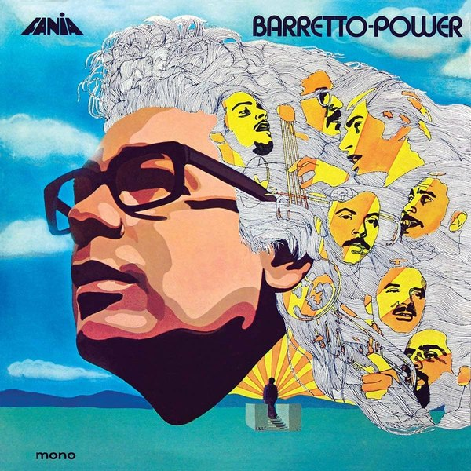
CRVI002483Ray Barretto - Barretto Power
1970
1970

CRVI000238Troubleman - Time Out Of Mind
Designer unknown · Far Out Recordings · 2004
Designer unknown · Far Out Recordings · 2004

CRVI000129Koichi Sato - Soap Bubbles Floated, They Floated Into Outer Space
Produced by Human Design · Fuji Television
Produced by Human Design · Fuji Television

CRVI001086Kim Laughton - Untitled
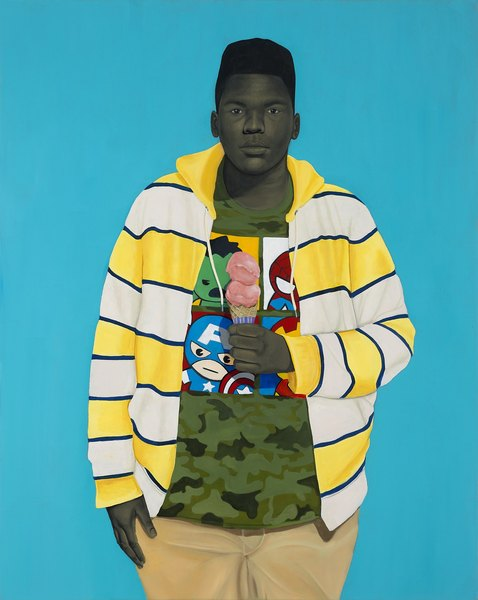
CRVI002359Amy Sherald - Innocent You, Innocent Me
2016
2016

CRVI001176Tina Brooks - True Blue
Designed by Reid Miles, photograph by Francis Wolff · Blue Note BLP 4041 · 1960
Designed by Reid Miles, photograph by Francis Wolff · Blue Note BLP 4041 · 1960

CRVI001093Kim Laughton - Untitled
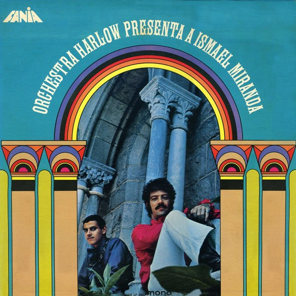
CRVI002579Orchestra Harlow - Orchestra Harlow Presenta a Ismael Miranda
1968
1968

CRVI000003Thomas Fehlmann - Visions Of Blah
Designed by Bianca Strauch · Kompakt · 2002
Designed by Bianca Strauch · Kompakt · 2002
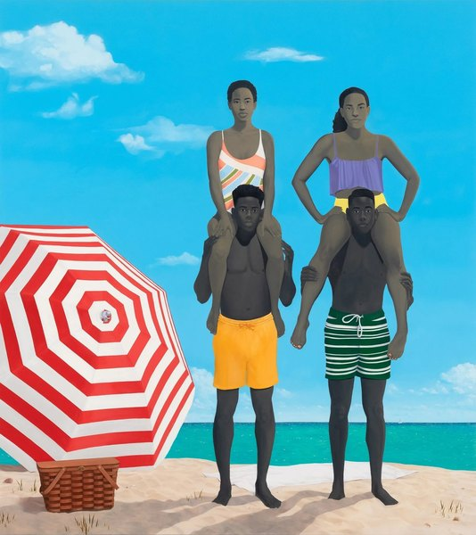
CRVI002363Amy Sherald - Precious jewels by the sea
2019
2019
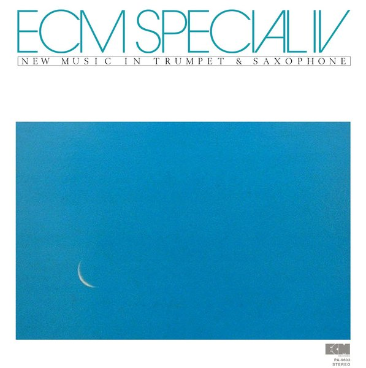
CRVI001432Hirohito Fukutomi - ECM Special IV: New Music in Trumpet & Saxophone
Album cover · ECM PA-9603 · 1977
Album cover · ECM PA-9603 · 1977
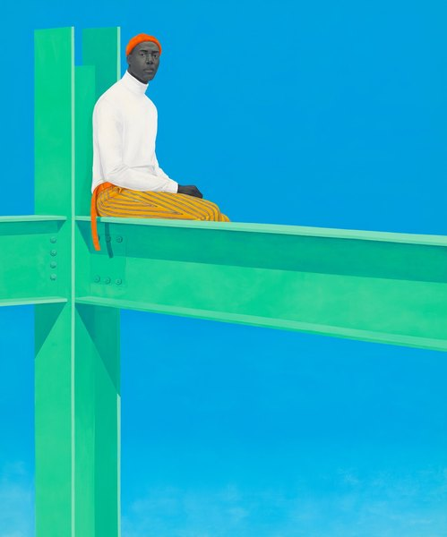
CRVI002357Amy Sherald - If You Surrendered to the Air, You Could Ride It
2019
2019
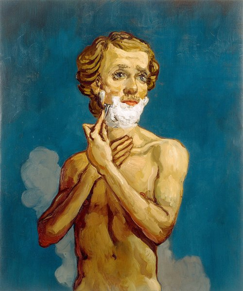
CRVI002052John Currin - The Shaving Man
1993
1993

CRVI000779Folio - Folio 5: CIBA-U.S.A.
Sanders Printing Corporation, New York · c. 1960–65
Sanders Printing Corporation, New York · c. 1960–65
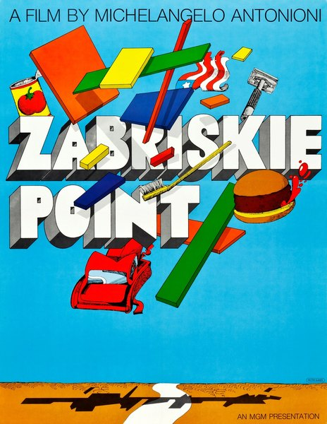
CRVI002502Milton Glaser - Zabriskie Point
1970
1970
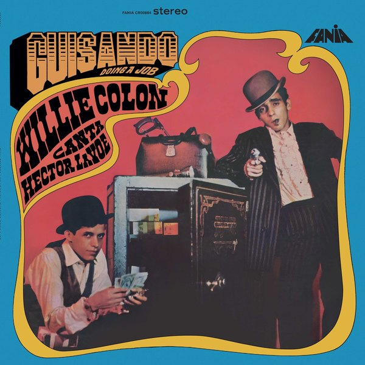
CRVI002573Willie Colón - Guisando / Doing a Job
1969
1969
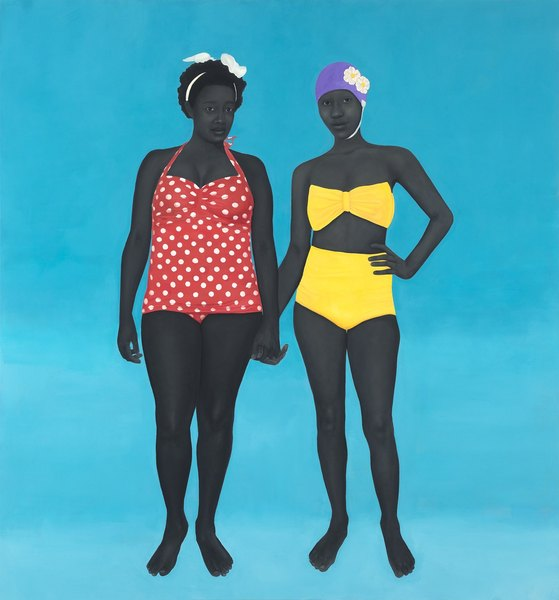
CRVI002358Amy Sherald - The Bathers
2015
2015

CRVI001475Paul Cézanne - The Pigeon Tower at Bellevue
1890
1890

CRVI000566Graeme James - The Coming Food Catastrophe
The Economist, May 21-27, 2022 · 2022
The Economist, May 21-27, 2022 · 2022

CRVI000262Jakub Kamiński - Wniebowzieci
Film Poster
Film Poster

CRVI001304Horace Parlan - Headin' South
Photograph by Ronnie Brathwaite · Blue Note 4062 · 1960
Photograph by Ronnie Brathwaite · Blue Note 4062 · 1960

CRVI000030Equiknoxx - Bird Sound Power
Designed by Jon Kraus · DDS · 2016
Designed by Jon Kraus · DDS · 2016

CRVI000857Julian Stanczak - Homage
Acrylic on canvas · 1990
Acrylic on canvas · 1990

CRVI000015FKA Twigs - LP 1
Designed by FKA Twigs, Phil Lee · Young Turks · 2014
Designed by FKA Twigs, Phil Lee · Young Turks · 2014

CRVI000805Mark Tansey - Reverb
Oil on canvas · 213.4 × 152.4 cm · 2017
Oil on canvas · 213.4 × 152.4 cm · 2017

CRVI001215Alice Coltrane With Strings - World Galaxy
Designed by Peter Max, photograph by Philip Melnick · Impulse! AS-9218 · 1972
Designed by Peter Max, photograph by Philip Melnick · Impulse! AS-9218 · 1972
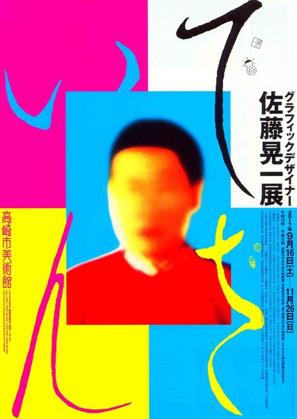
CRVI002498Koichi Sato - グラフィックデザイナー 佐藤晃一展 (Graphic Designer Koichi Sato)
2017
2017
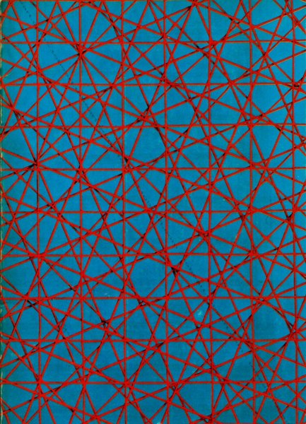
CRVI001846Unidentified - Red lines on blue
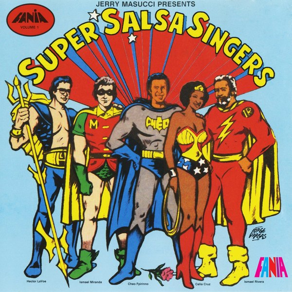
CRVI002562Various Artists - Super Salsa Singers Volume I
1977
1977

CRVI001155John Coltrane - Infinity
Designed by Richard Taylor, photograph by Chester Sheard · Impulse! AS-9225 · 1972
Designed by Richard Taylor, photograph by Chester Sheard · Impulse! AS-9225 · 1972

CRVI001301Bobbie Gentry - Touch 'Em With Love
Designer unrecorded · Capitol ST-234 · 1969
Designer unrecorded · Capitol ST-234 · 1969
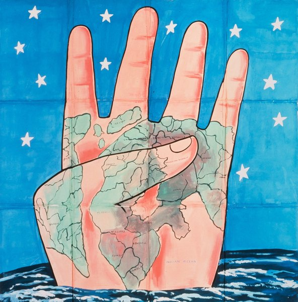
CRVI001932Francesco Clemente - Hand with a map

CRVI001134Grant Green - Street Of Dreams
Designed by Reid Miles, photograph by Jim Marshall · Blue Note BST 84253 · 1967
Designed by Reid Miles, photograph by Jim Marshall · Blue Note BST 84253 · 1967

CRVI000352Earth, Wind & Fire - AIl 'N' AIl
Designer unknown · Columbia · 1977
Designer unknown · Columbia · 1977
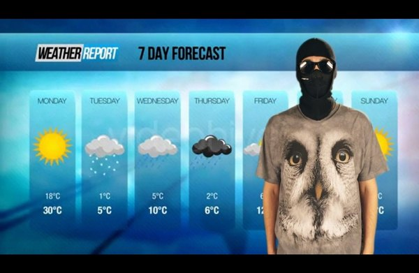
CRVI002082Hito Steyerl - Liquidity Inc.
2014
2014

CRVI001369Miles Davis - Blue Haze
Designed by Tom Hannan · Prestige 7054 · 1956
Designed by Tom Hannan · Prestige 7054 · 1956
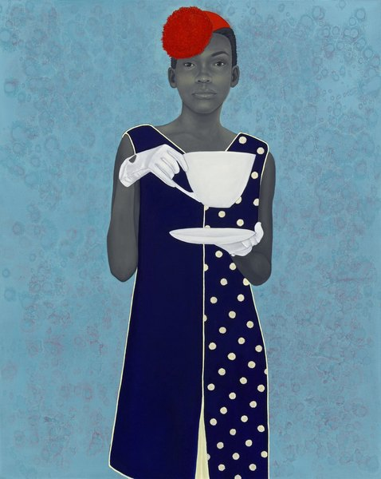
CRVI002360Amy Sherald - Miss Everything (Unsuppressed Deliverance)
2013
2013
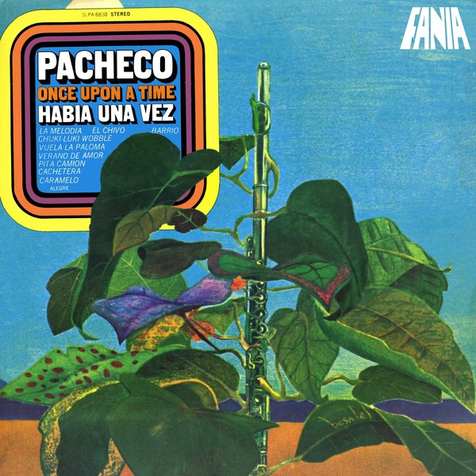
CRVI002591Johnny Pacheco - Once Upon a Time / Había Una Vez
1970
1970

CRVI001178Wayne Shorter - JuJu
Designed by Reid Miles · Blue Note BLP 4182 · 1965
Designed by Reid Miles · Blue Note BLP 4182 · 1965

CRVI001197Mati Klarwein - Alexander's Dream
Painting
Painting

CRVI000489R. Kikuo Johnson - The Robots Are Coming
MIT Technology Review, May/June 2024 · 2024
MIT Technology Review, May/June 2024 · 2024

CRVI000325Lone - Ecstasy & Friends
Designer unknown · Werk Discs · 2009
Designer unknown · Werk Discs · 2009
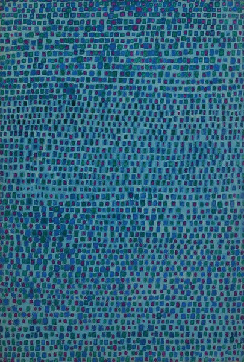
CRVI002174Kim Whanki - 25-V-70 #173
1970
1970
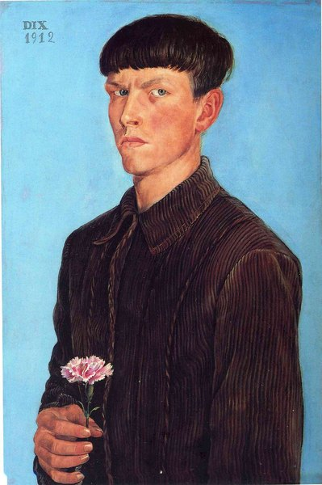
CRVI001563Otto Dix - Self-Portrait
1912
1912

CRVI001141Jackie McLean - Bluesnik
Designed by Reid Miles, photograph by Francis Wolff · Blue Note BLP 4067 · 1962
Designed by Reid Miles, photograph by Francis Wolff · Blue Note BLP 4067 · 1962
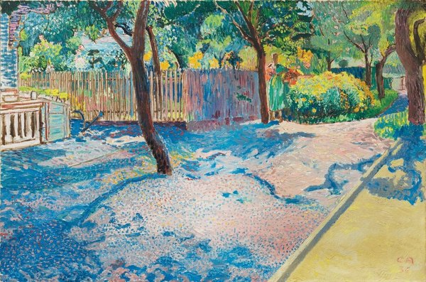
CRVI001645Cuno Amiet - Blumengarten
1936
1936
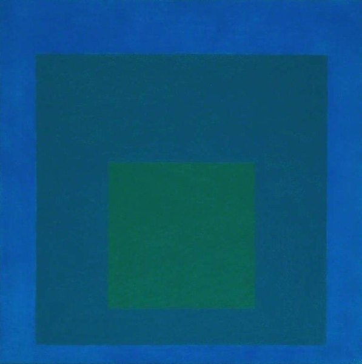
CRVI001760Josef Albers - Study for Homage to the Square: Beaming
1963
1963
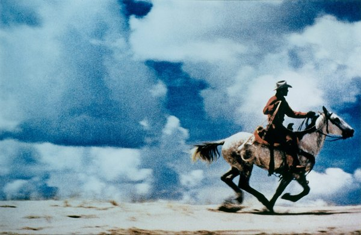
CRVI002143Richard Prince - Untitled (Cowboy)
1989
1989

CRVI001159Kenny Burrell - Blue Lights, Volumes 1 & 2
Designed by Reid Miles, artwork by Andy Warhol · Blue Note BLP 1596 · 1958
Designed by Reid Miles, artwork by Andy Warhol · Blue Note BLP 1596 · 1958

CRVI000178Sonny Rollins - Sonny Rollins
Designed by Bob Weinstock · Prestige LP 7029 · 1953
Designed by Bob Weinstock · Prestige LP 7029 · 1953

CRVI000626Anton Ioukhnovets, Mario Sorrenti - Make America Happy Again
Esquire, February 2017 · 2017
Esquire, February 2017 · 2017
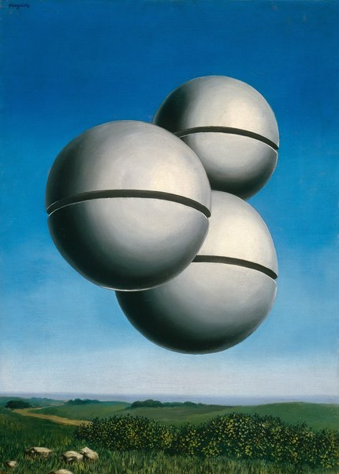
CRVI002346René Magritte - Voice of Space (La voix des airs)
1931
1931

CRVI000307Der Plan - Normalette Surprise
Designer unknown · Ata Tak · 1981
Designer unknown · Ata Tak · 1981

CRVI000809Mark Tansey - Xing
Oil on canvas · 223.5 × 152.4 cm · 2021
Oil on canvas · 223.5 × 152.4 cm · 2021

CRVI000230Me&You - Floating Heavy
Designer unknown · Tru Thoughts · 2007
Designer unknown · Tru Thoughts · 2007
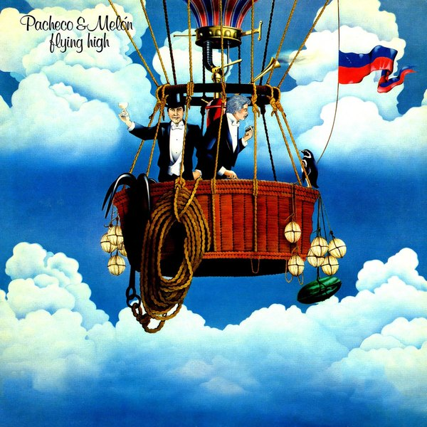
CRVI002599Johnny Pacheco and Melón - Flying High
1983
1983

CRVI000463Richard Turley - The Underground Solution
Bloomberg Businessweek, 7 November 2011 · 2011
Bloomberg Businessweek, 7 November 2011 · 2011
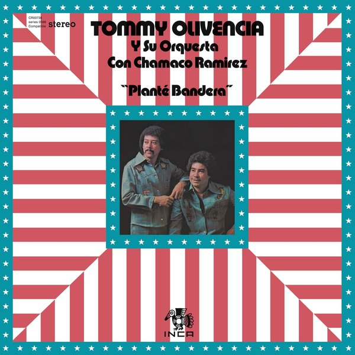
CRVI002558Tommy Olivencia y Su Orquesta - Planté Bandera
1975
1975
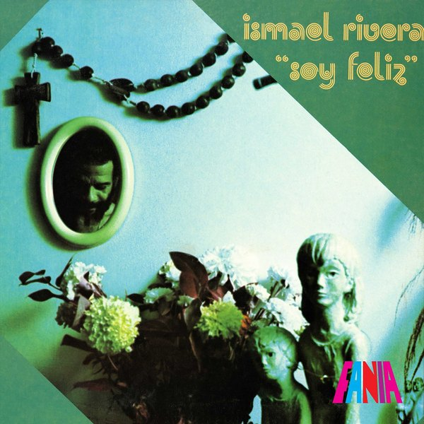
CRVI002582Ismael Rivera - Soy Feliz
1977
1977
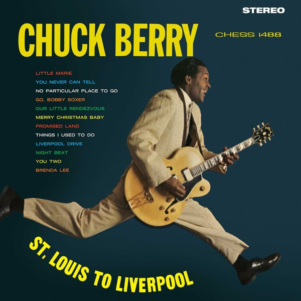
CRVI002564Chuck Berry - St. Louis to Liverpool
1964
1964
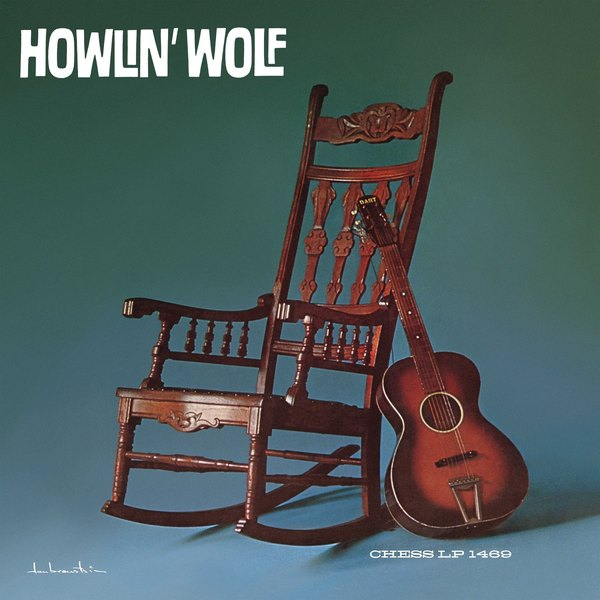
CRVI002576Howlin' Wolf - Howlin' Wolf
1962
1962

CRVI000192Unknown - Aviators
Reaction GIF · Tom Cruise putting on aviators · 55 frames, 2.2s loop
Reaction GIF · Tom Cruise putting on aviators · 55 frames, 2.2s loop
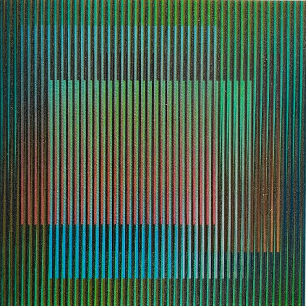
CRVI001839Carlos Cruz-Diez - Chromointerférence
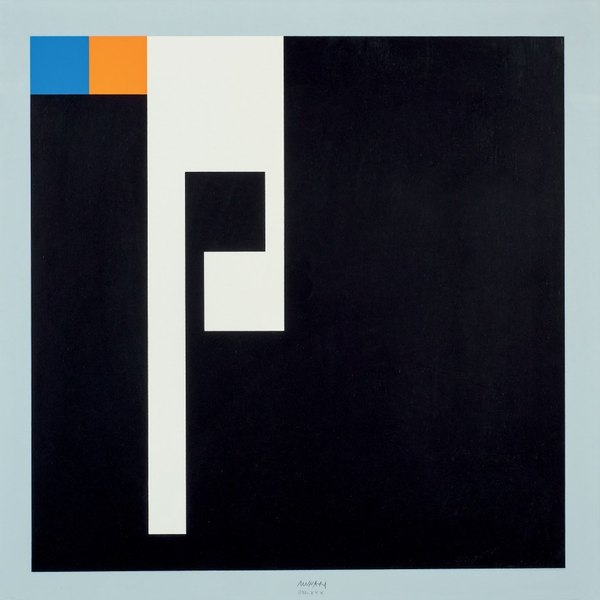
CRVI002409Bruno Munari - Negativo positivo
1991
1991
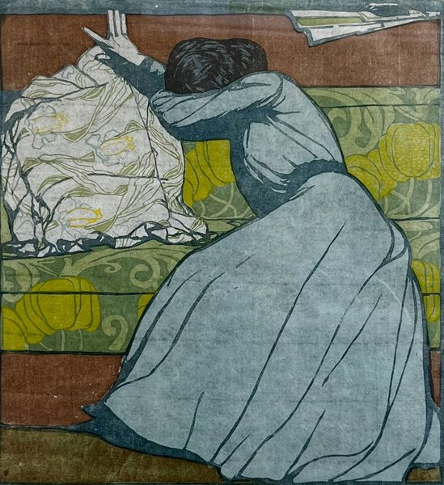
CRVI002642Maximilian Kurzweil - Der Polster (The Cushion)
1903
1903
CRVI002569Willie Colón - Asalto Navideño
1970
1970
CRVI002607Ray Barretto - Indestructible
1973
1973
CRVI002574Willie Colón - Lo Mato (Si No Compra Este LP)
1973
1973
CRVI002575Willie Colón and Héctor Lavoe - Vigilante
1983
1983